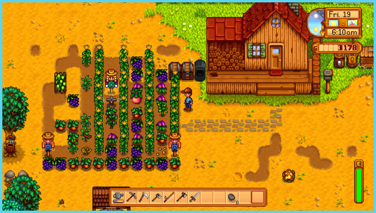
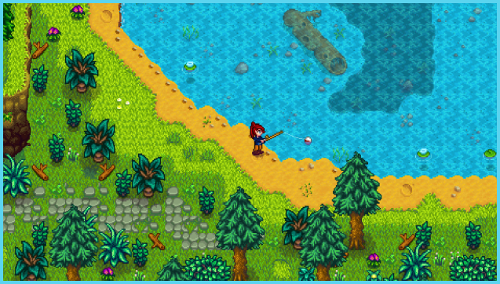

Stardew Valley
All Your Cottagecore Needs in One Game
Game Synopsis:
You’ve inherited your grandfather’s old farm plot in Stardew Valley. Armed with hand-me-down tools and a few coins, you set out to begin your new life. Can you learn to live off the land and turn these overgrown fields into a thriving home? It won’t be easy. Ever since Joja Corporation came to town, the old ways of life have all but disappeared. The community center, once the town’s most vibrant hub of activity, now lies in shambles. But the valley seems full of opportunity. With a little dedication, you might just be the one to restore Stardew Valley to greatness!
(https://www.stardewvalley.net/about/)
Gameplay:
Stardew Valley is a game centered on farming: farming in the literal agricultural sense, farming for materials, farming for collectibles, even farming for love. You play as an office worker who abandons the city for emotional healing through tending to their deceased grandfather’s farm. Along the way, you get to meet and interact with different characters, explore dungeons and hidden regions of town, and earn different collectibles, all while being able to customize your farm and cabin to your liking. And who knows? You could even settle down and have kids in Stardew Valley.
(https://medium.com/game-design-fundamentals/a-critical-play-of-stardew-valley-c7ec30ef507)

